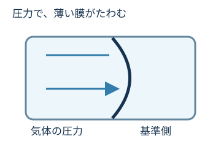
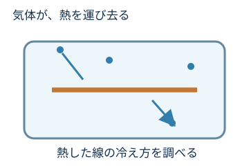
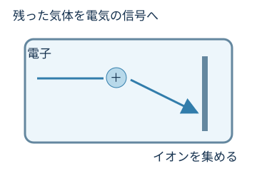

葵（あおい）
真空って目に見えないけど、どうやって測るんだろう？
ポンプにも得意な範囲がありました。測る側にも、圧力に合った方法があります。
葵（あおい）
真空って目に見えないけど、どうやって測るんだろう？
陽斗（はると）
圧力で表すなら、何か測る方法があるってことかな？
けー子ちゃん先生
そうですね。真空は「真空計」を使って、圧力として確かめます。測る範囲によって方法も違うんですよ。
では、真空計は何を手がかりに圧力を測っているのでしょう？

空っぽに見えるけど、どのくらい真空になったか分かる？
01で、真空は圧力で表すって習ったね。
圧力を調べるために使うのが、真空計です。
Pa（パスカル）は圧力の単位です。容器の中が真空でも圧力はゼロとは限りません。
比較例：こちらの方が圧力が高い。
比較例：こちらの方が圧力が低く、真空度が高い。
ここでの数値は比較の例です。合格値や実機の操作目標ではありません。

薄い膜が圧力を受けると、わずかにたわみます。その変化を読み取る方法があります。代表例が隔膜式の真空計です。
目に見えない空気でも、膜は押せるんだね。

気体によって熱の逃げ方が変わります。熱した線の冷え方を手がかりに圧力を求めます。

残った気体をイオンにし、その量に関係する電気信号を測ります。高真空側で使われます。
どちらも気体の性質を利用した間接測定です。気体の種類によって表示が変わるため、実機では対応する条件を確認します。
03のポンプと同じで、測る方法も使い分けるんだね。
はい。一つのセンサーで、すべての圧力を正しく測れるとは限りません。
隔膜式やピラニなど、圧力に合う方式を使う。
電離真空計など、少ない気体を検出できる方式を使う。
異なるセンサーを組み合わせた真空計もあります。表示器が一つでも、内部で複数の方法を使っている場合があります。
測定範囲は機種で異なり、重なる範囲もあります。特に隔膜式は、測る圧力に応じた製品が用意されています。
数字を見る前に「単位」と「測れる範囲」を確認する。
見た目ではなく、真空計の表示で確かめる。
膜の動き、熱の逃げ方、電気信号などを使う。
一種類で、すべてを測れるとは限らない。
ポンプは動いているのに、真空計の数字が下がらない。次は、その理由を考えます。